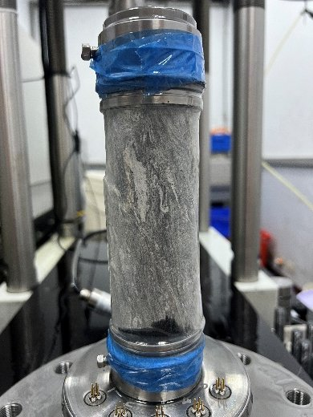
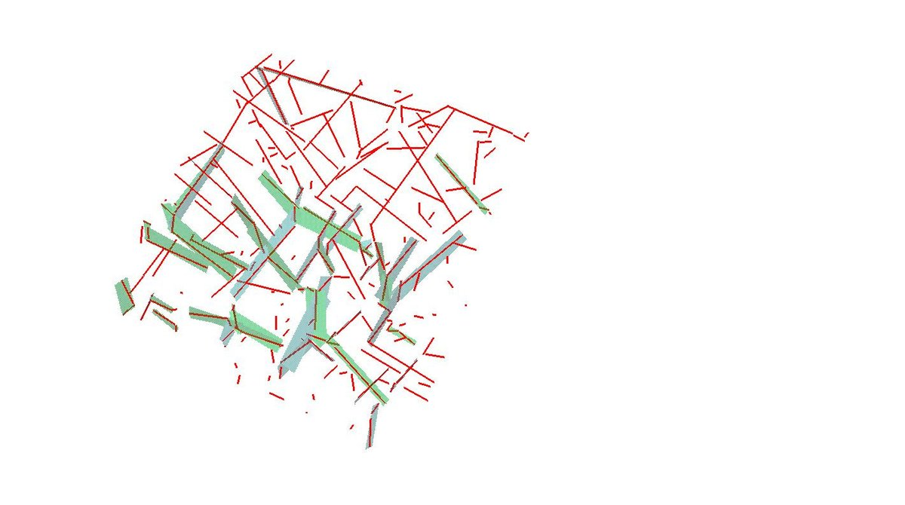
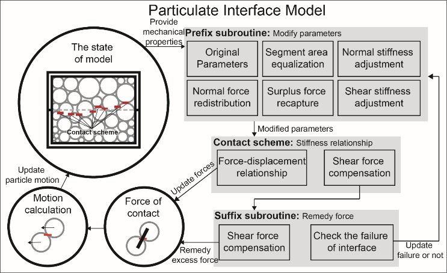
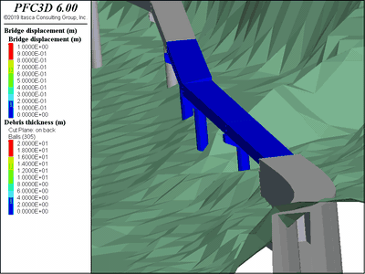

以 GCTS RTX-1000 進行單軸、三軸與間接張力試驗，並以音射訊號追蹤岩石內部微裂隙的萌生與擴展，建立後續模式所需的參數與破壞準則。

以攝影測量與光達建立露頭三維點雲，用演算法自動萃取節理位態、粗糙度與裂隙軌跡，把耗時且主觀的野外量測轉為量化且可重複的流程。

將試驗與現地觀察轉換成離散元素法中可計算的接觸模式 —— 顆粒界面模式、滲流模式與雙凹鍵結模式，是本研究室最主要的學術貢獻。

把建立的模式用於真實案例，重現落石、土石流與邊坡崩塌的發生過程，推估運移範圍，協助主管機關進行判斷與決策。

顆粒界面模式 PIM
可直接採用實驗室試驗參數、無須反算的離散元素法界面模式，提升岩石工程災害預測的可行性。

雙凹鍵結模式
依據岩材薄片觀察發展的膠結模式，以微觀參數預測巨觀力學行為時表現更佳。

RTX-1000 三軸試驗系統
最大載重 1000 kN、最大圍壓 70 MPa，可處理國內一般地質條件之岩石三軸試驗。
歡迎加入我們
如果你對岩石力學、數值分析或工程地質有興趣，歡迎與我們聯絡，或先看看目前招募中的研究主題。